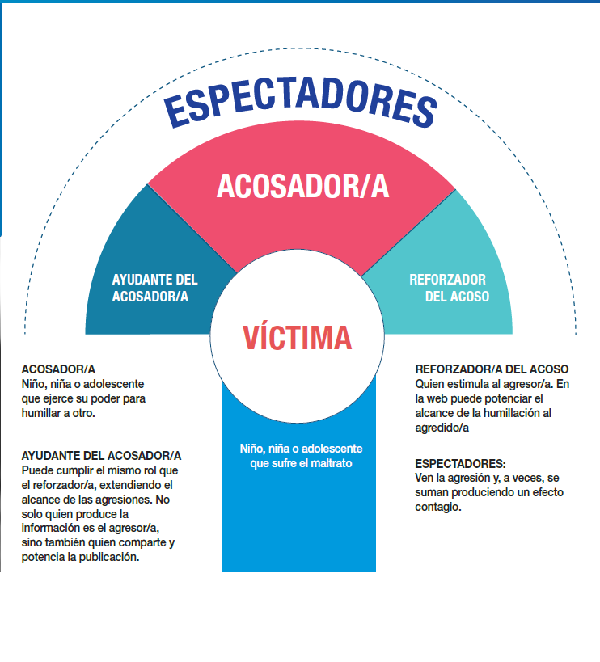

BUENAS PRÁCTICAS PARA PROTEGER LA PRIVACIDAD EN INTERNET
Introducción
En la era digital actual, Internet se ha convertido en una herramienta indispensable en nuestra vida diaria. Utilizamos y compartimos nuestros datos sin considerar los riesgos a los que estamos expuestos. Por ello, presentamos un informe con el objetivo de informar sobre estos riesgos y ofrecer prácticas para proteger la privacidad en Internet.
Comenzamos definiendo qué es la privacidad. Su origen etimológico proviene del latín y está compuesta por los componentes léxicos "privatus" (propio, particular, prohibido al público) y el sufijo "-dad" (cualidad). "Privatus" proviene del verbo latino "privare", que significa "privar". Según la Real Academia Española (RAE), privacidad es el ámbito de la vida privada que se tiene derecho a proteger de cualquier intromisión.
Por lo tanto, podemos concluir que la privacidad se refiere al derecho que tenemos sobre nuestros datos. Es importante aclarar que los términos informáticos "seguridad de la información" y "privacidad de la información", aunque a menudo se utilizan indistintamente debido a su estrecha relación, no son lo mismo, ya que existen diferencias importantes entre ambos conceptos.
La seguridad de la información se refiere a la protección de la información contra el acceso, uso, divulgación, alteración, destrucción o pérdida no autorizados. En cambio, la privacidad se refiere al control que tiene un individuo sobre su información personal. Esto incluye decidir qué información se comparte, con quién se comparte y cómo se utiliza.
LA RESPONSABILIDAD DE LAS CORPORACIONES DE PROTEGER LOS DATOS PERSONALES
Los datos personales son un derecho garantizado en el ámbito legal, pero somos responsables de salvaguardar y usarlos adecuadamente. Como propietarios de nuestros datos personales, tenemos derecho a ser informados sobre los actos que estamos llevando a cabo y las consecuencias de los mismos cuando facilitamos dichos datos.
Las redes sociales siempre nos hacen aceptar las Políticas de Privacidad que son documentos a través de los cuales las entidades responsables del tratamiento de datos personales describen cómo recolectan, procesan y administran los datos personales de usuarios y/o clientes.
Según el último estudio anual realizado por Vanson Bourne para la empresa Veeam Software, actualmente el 89% de las empresas no protegen adecuadamente sus datos. La exposición de información confidencial puede tener un gran impacto en los negocios, desde daños a la reputación hasta la puesta en peligro de la continuidad del negocio.
Anand Eswaran, CEO de Veeam, dice que el crecimiento de los datos ha sido muy rápido en los dos últimos años, a causa de la pandemia, gracias en gran parte a la adopción del teletrabajo y de servicios basados en la nube. Explica que “a medida que los volúmenes de datos se han disparado, también lo han hecho los riesgos asociados con la protección de datos, y el ransomware es un ejemplo”. Sus indagaciones muestran que las organizaciones son conscientes de estos desafíos y están aumentando la inversión en seguridad, pero en la mayoría de los casos no han alcanzado un nivel de protección adecuado. Prevé que “los volúmenes de datos y la diversidad de plataformas seguirán aumentando, y el panorama de amenazas cibernéticas se expandirá. Por lo tanto, los CXO deben invertir en una estrategia que cubra las brechas que ya tienen y se mantenga al día con las crecientes demandas de protección de datos”. Algunos casos en los que las empresas no han protegido los datos de sus usuarios incluyen:
En 2017, Equifax, una empresa crediticia estadounidense, sufrió una brecha de seguridad que afectó a la información personal de 143 millones de sus clientes. Facebook fue sancionada por no proteger debidamente la privacidad de sus usuarios. Hubo fallas de seguridad en materia de datos de Facebook, Uber y Zoom.
PROTECCIÓN DE LOS DATOS PERSONALES Ley 25.326 Disposiciones Generales. Principios generales relativos a la protección de datos. Derechos de los titulares de datos. Usuarios y responsables de archivos, registros y bancos de datos. Control. Sanciones. Acción de protección de los datos personales. Sancionada: Octubre 4 de 2000. Promulgada Parcialmente: Octubre 30 de 2000. Aprobada por: El Senado y la Cámara de Diputados de la Nación Argentina reunidos en Congreso, etc. sancionan con fuerza de Ley: A continuación se dirá a más detalle de que trata está leyLa Ley 25.326 de Argentina, conocida como la ley de Protección de los Datos Personales, establece el marco legal para la protección de datos personales en el país. Objeto de la Ley: Proteger integralmente los datos personales asentados en archivos, registros, bancos de datos, y otros medios técnicos de tratamiento de datos, sean públicos o privados. Datos Sensibles: Se refiere a datos que revelan origen racial y étnico, opiniones políticas, convicciones religiosas, filosóficas o morales, afiliación sindical, y datos referentes a la salud o a la vida sexual. Derechos de los Titulares: Incluye el derecho al honor, a la intimidad, y el acceso a la información que sobre las personas se registre. Responsabilidades: Define las responsabilidades de los usuarios y responsables de archivos, registros y bancos de datos. Sanciones: Contempla las sanciones aplicables en caso de incumplimiento de la ley.
¿CÓMO CUIDAR NUESTRA PRIVACIDAD?
Proteger tu privacidad es fundamental en la era digital. Aquí series de pasos a seguir para tener tus datos segura . Conoce tus datos personales: Cualquier información que pueda identificarte, como DNI, CUIT/CUIL, fotos, videos, domicilio, números de teléfono, datos de localización, dirección IP, cookies, situación crediticia, datos biométricos, etc., son considerados datos personales. . Derecho sobre tus datos : La ley te garantiza el derecho a saber quién y cómo se utilizan tus datos personales almacenados en registros públicos o privados . Acceso a tus datos : Tienes derecho a acceder, rectificar, modificar, actualizar o eliminar tus datos personales registrados por organismos oficiales o empresas privadas. . Protección de datos en la web y redes sociales : Utiliza contraseñas seguras que incluyan mayúsculas, minúsculas, números y símbolos. Cambia tus contraseñas regularmente, cada 30, 60 o 90 días. Usa el modo incógnito para que no se guarden tus contraseñas ni tu historial de navegación. No uses la misma contraseña para diferentes sitios y redes sociales. No ingreses datos personales en sitios desconocidos ni respondas a correos que soliciten completar tus datos personales. Lee los términos y condiciones de uso de tus datos personales en redes sociales o aplicaciones antes de aceptarlos . Recomendaciones generales Lee la política de privacidad de los servicios que utilizas para entender cómo se manejan tus datos. Descarga aplicaciones solo desde fuentes seguras. Configura la privacidad en tus dispositivos y servicios para controlar qué datos compartes. Conéctate solo a redes seguras de Internet Recuerda que proteger tus datos personales no solo cuida tu privacidad e intimidad, sino que también previene fraudes, ciberdelitos y el uso no autorizado de tu información. Siempre es importante estar informado y ser proactivo en la gestión de tu privacidad digital.PERSONAS MAYORES Y EL USO DE LA TECNOLOGÍA
A continuación una nota de la página web realizada por la Defensoría del Pueblo, de la ciudad autónoma de Buenos Aires, el 15 de junio de 2022 El 15 de junio es el “Día Mundial de la Toma de Conciencia del Abuso y Maltrato a la Vejez”, dispuesto por Naciones Unidas y tomando en cuenta el crecimiento exponencial de esta franja etaria, el Centro de Protección de Datos Personales (CPDP), sigue trabajando para que las personas mayores puedan integrarse a la sociedad del conocimiento, acompañándolas para que puedan conectarse y no quedar aisladas en este nuevo mundo en el que nos toca transitar. Es por ello que nos propusimos realizar una nueva encuesta, Personas mayores y el uso de la Tecnología, a fin de conocer de primera mano y estudiar la integración de esta franja poblacional al mundo de las TIC’s. Los primeros datos obtenidos por el CPDP fueron presentados en una mesa de trabajo junto con los integrantes del Programa de la Universidad Tecnológica Nacional (UTN), sede Bs. As., Representantes de Programa Centros de Día para las Personas Mayores del GCABA y, además, integrantes del Instituto Universitario del Hospital Italiano de Buenos Aires. La toma virtual amplió aún más los límites geográficos de los encuestados demostrando que los usos y reparos a la hora de usar las nuevas tecnologías de la información no tiene barreras geográficas y son iguales en las distintas provincias de nuestro país. Dado que más del 85% lo completó de manera virtual esto incidió directamente en los resultados de conexión a Internet, pasando de 65,7% a 96.5%. Cabe resaltar, que entre los encuestados que no usan Internet se debe a la falta de recursos económicos, lo que interpela el concepto de democratización del saber o ciudadanía digital, para lo que hacen falta políticas públicas que vayan en ese sentido. En cuanto al acceso a Internet, notamos un incremento en todos los dispositivos con los que se conectan, donde el uso de las computadoras (escritorio y portátiles) pasan a ser el principal medio para acceder a Internet (97%), seguido por los celulares (89,3%). Y donde los Smart Tv fueron los que más aumentaron de 10,5% a 24,8%. Al ser consultados sobre las razones por las que emplean la tecnología, el 88,6% declaró para buscar información de su interés, el 88,3% que lo hace para comunicarse con otros, el 82,3% para hacer trámites o pedir turnos médicos, el 60,5% ve películas y/o vídeos (estas últimas dos se duplicaron en comparación a la pre pandemia). Mientras que el 71,2% lo ha incorporado para educarse y un 60% para realizar operaciones bancarias y pagos de impuestos. Entre las aplicaciones más empleadas están Whatsapp con el 96,47% seguida por Facebook con el 71,49% y YouTube con 70,13%. Mientras que redes sociales como Instagram (37,7%), plataformas de videoconferencia -Zoom/Meet/Jitsi-(59%), Pinterest (20%), Twitter (10%) duplicaron su uso en comparación a la encuesta del 2019. A fin de romper con los prejuicios en base a la edad se consultó sobre el uso de Snapchat y las app´s de citas como happn y tinder, las mismas sólo se emplean por el 1% de los encuestados no presentando variación con los resultados del 2019. ¿Cómo cuidan su privacidad y cuán riesgoso es el uso de la tecnología para ellos? Al consultarlos si tienen reparos a la hora de usar las tecnologías de la información y la comunicación, los números fueron similares a los del estudio del 2019. El 61.1% respondió que NO, y esto se debe a que para ellos ya forman parte de su vida y cuidan sus datos y su privacidad. El 88,6% indicó que cuida mucho o bastante su privacidad.
Los que respondieron que no tienen reparos: Forma parte de mi vida Cuido mis datos No, solo cuido la privacidad Manejo la seguridad de las redes para que no sea abierta la información Confío en la tecnología y me despierta constantemente nuevas habilidades Aprendí a usarlas y en caso de dificultades puedo resolverlas. Los que respondieron que tienen reparos: Miedo a los hackers. Seguridad y estafas. Ignorancia y falta de manejo. Miedo de cometer un error Me preocupa cuidar mi privacidad y mis datos personales. Debido a la forma en que circula la información en la red, es importante tener en cuenta que uno de los derechos que adquiere especial relevancia es el de la “Protección Personal de Nuestros Datos” y la privacidad en el entorno digital. Consideramos que acompañar a nuestros mayores es la clave para que puedan animarse, estar incluidos y sentirse parte. Y que ellos son los mejores multiplicadores para quitarle los miedos y prejuicios a sus pares. Entendemos que esta etapa de pandemia, donde nos vimos obligados a vivir una cuarentena obligatoria en nuestros hogares, redundó en un mayor empleo de las tecnologías de la información; y es por ello que consideramos sumamente oportuno seguir trabajando en estos temas y reforzar el conocimiento que tienen las personas sobre las conductas y riesgos que existen, así como también brindarles herramientas para que puedan proteger su intimidad y datos personales en las redes. Un gráfico de barras que muestra las razones del uso de la tecnología por parte de las personas mayores, basado en los datos de la encuesta:

- Buscar información: 88.6%
- Comunicación: 88.3%
- Trámites/Turnos médicos: 82.3%
- Ver películas/videos: 60.5%
- Educación: 71.2%
- Operaciones bancarias: 60.0%
Este gráfico ilustra cómo las personas mayores utilizan la tecnología principalmente para buscar información y comunicarse con otros, seguidos por la realización de trámites médicos y el consumo de contenido audiovisual. Agradecemos al Programa Centros de Día para Personas Mayores del GCBA, la UTN Sede B.A “Experiencias Universitarias para Personas Mayores” y el Instituto Universitario del Hospital Italiano de Buenos Aires que colaboraron para la toma de la misma. Procesamiento de los datos: A cargo de las licenciadas Camila Rojas y Alejandra Perfumo del equipo del Centro de Protección de Datos Personales de la Defensoría del Pueblo de la Ciudad Autónoma de Buenos Aires. LA PROTECCIÓN DE MENORES Ante el uso intensivo de redes sociales y plataformas digitales, Niñas, Niños y Adolescentes (NNyA) afrontan múltiples riesgos en lo que se refiere a su seguridad y privacidad. Esta situación se ve agravada por problemáticas sociales como el ciberbullying y delitos penales como el grooming. El abordaje requiere, necesariamente, la intervención del Estado y el desarrollo de políticas y estrategias para su prevención. Los/as NNyA que sufren ciberbullying y/o grooming están protegidos/as por la Convención de los Derechos del Niño, con jerarquía constitucional en nuestro país, y por la Ley N° 26.061. En la Argentina, además, el Grooming es un delito previsto en el artículo 131 del Código Penal.
¿QUÉ ES EL CIBERBULLYING?
Es el acoso psicológico entre NNyA. Supone el uso y difusión de información de datos difamatorios y discriminatorios a través de dispositivos electrónicos o la publicación de videos y/o fotos.
¿QUIÉNES PARTICIPAN DEL CIBERBULLYING?
¿QUÉ HACER ANTE UN NIÑO/A O ADOLESCENTE QUE SUFRE CIBERBULLYING?
• Mantener una charla abierta para que pueda decir lo que le pasa.• No minimizar ni exagerar la situación.
• Intentar dialogar con el grupo de pertenencia y evitar mantener en secreto la situación para no aumentar el aislamiento de la víctima.
• No fomentar la venganza.
• Evitar que se siga compartiendo información que perjudique a otros/as.
• Configurar la privacidad en las redes sociales y elegir como amigos/as sólo a personas que realmente conozcan.
• Utilizar herramientas que brindan las redes sociales para reportar el acoso o bloquear al acosador/a
¿QUÉ ES EL GROOMING?
Es el acoso sexual de un adulto a un niño/a o adolescente a través de internet o de cualquier tecnología de transmisión de datos. Se trata de un delito reprimido con pena de prisión. La víctima padece una gran angustia y ultraje a su intimidad.
¿Cómo se instrumenta el grooming?
• Mediante perfiles falsos y, fingiendo ser otro niño/a o adolescente, se gana la confianza de su víctima manipulándola psicológicamente para obtener desde fotos/videos íntimos hasta encuentros físicos. • Las fotos/videos son utilizadas por el/la acosador/a para extorsionar a su víctima para obtener su silencio y someterla a más exigencias.
¿Qué hacer ante un caso de grooming?
• Se trata de una experiencia personal muy fuerte para el/la niño/a o adolescente, quien va a necesitar de todo el apoyo y contención emocional de los padres y/o adultos a cargo.• El acosador/a debe ser denunciado ante la Justicia para interrumpir su accionar el cual puede estar perjudicando a un gran número de víctimas.
• Ante esta una situación concreta, te aconsejamos:
• Hablá con tu hijo/a, acompáñalo/a en este proceso sin culparlo/a ni cuestionarlo/a.
• No borrés ningún contenido de la computadora o teléfono celular.
• No amenaces, increpes o mantengas una conversación con el abusador.
• Denuncia el caso en la Justicia, donde te guiarán e indicarán los pasos a seguir, tanto para brindar contención profesional a la víctima, como para detener al acosador.
• Podes realizar la denuncia en una Fiscalía o comunicándote al teléfono 0800-222-1717 (Programa Víctimas Contra las Violencias).
HERRAMIENTAS DE PREVENCIÓN
Plataformas digitales y redes sociales ofrecen distintas herramientas para resguardar la seguridad y la privacidad, que resultan muy útiles para preservar a niñas, niños y adolescentes ante la posibilidad de que sean víctimas de ciberbullying y/o grooming
¿Qué es lo primero que debo hacer?
• Pedile a tu hijo/a que te haga un recorrido por sus cuentas (Instagram, tik tok, etc.), que explique los memes y los comentarios, que te cuente de sus amigos/as y comparta con vos cualquier tema que le parezca extraño o difícil.• Crea tu propia cuenta en esas redes sociales y sigue a tu hijo/a. Verás lo que publica (a menos que te bloquee), pero no verás sus DM (mensajes directos).
• Configura con él/ella la privacidad /seguridad de las cuentas
FUENTES Y MATERIALES DE CONSULTA
- Consulta de privacidad - Real Academia de la Lengua Española: https://dle.rae.es/privacidad
- El 89% de las empresas no protege adecuadamente sus datos - Centro de Recursos User: https://almacenamientoit.ituser.es/noticias-y-actualidad/2022/02/el- 89-de-las-empresas-no-protege-adecuadamente-sus-datos#:~:text=Seg%C3% BAn%20un%20estudio%20reciente%2C%20a%20pesar%20de,el%20presupuesto%20de stinado%20a%20protecci%C3%B3n%20de%20datos%2C
- Consejos sobre Grooming – Presidencia de la Nación https://www.argentina.gob.ar/grooming/que-hacer-si-pasa
- Guía sobre Ciberbullying del Ministerio de Justicia y Derechos Humanos de la Nación http://www.jus.gob.ar/media/1039016/guiacyberbullying.pdf
- Guía de Sensibilización sobre Convivencia Digital – Dirección General de Cultura y Educación de la provincia de Buenos Aires / UNICEF Seguridad informática para Niños y Adolescentes / Ministerio de Seguridad de la provincia de Buenos Aires http://www.policia.mseg.gba.gov.ar/seguridadinformatica.html